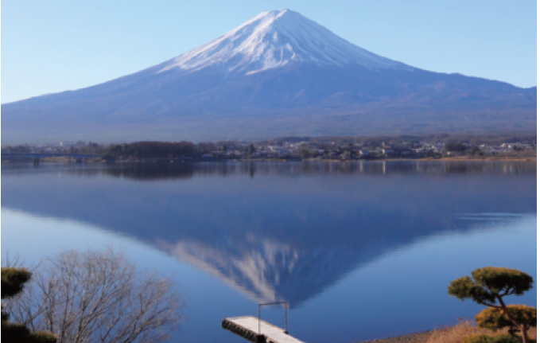

When studying the formation of mountain ranges, geologists estimate the amount of work required to lift a mountain from sea level. Consider a mountain that is essentially in the shape of a right circular cone. Suppose that the weight density of the material in the vicinity of a point P is \(g(P)\) and the height is \(h(P)\). (a) Find a definite integral that represents the total work done in forming the mountain. (b) Assume that Mount Fuji in Japan is in the shape of a right circular cone with radius 62,000 ft, height 12,400 ft, and density a constant 200 lb/ft\(^3\). How much work was done in forming Mount Fuji if the land was initially at sea level?
